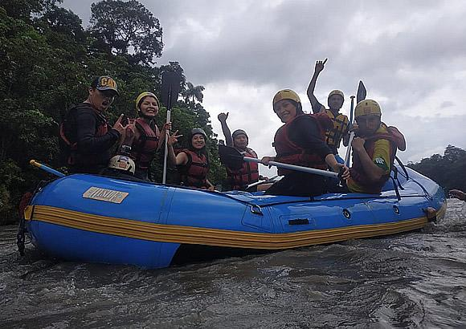

Trip summary:
IRF-certified guides
Wading or swimming in the river
Confidence jump into the water from a 6-meter diving platform
Regular boating equipment for the activity (life jacket, helmet, paddle)
Safety briefing and instructions at the start
12 km of river
Showers and restrooms available for changing clothes
FREE digital photos and videos of the activity
Transportation to and from Villa Tunari
